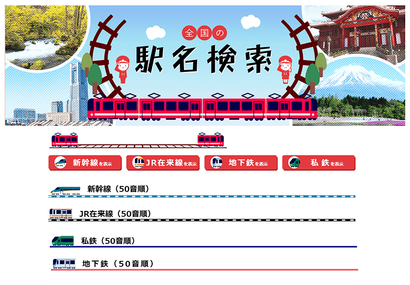

メインビジュアルと見出し画像
全国の駅名を検索できるページのMVや見出し画像、地図のグラフィック部分を担当しました。 またディレクターとしてWFの作成、コーディングを担当したオフショアとの連携、指示だし等を行いました。 期間は私の作業だけになります。
- 役割：ディレクション/デザイン
- 期間：3日
- 全国の駅名検索
全国の駅名を検索できるページのMVや見出し画像、地図のグラフィック部分を担当しました。 またディレクターとしてWFの作成、コーディングを担当したオフショアとの連携、指示だし等を行いました。 期間は私の作業だけになります。